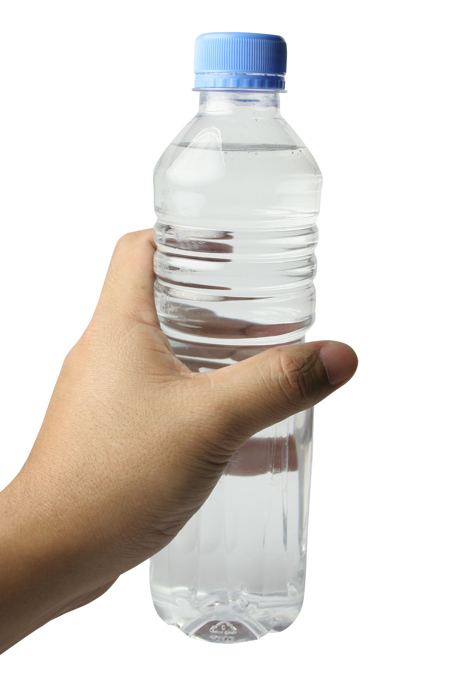

Hydrate Your Future
The Brainy Water Bottle (BWB) is a smart bottle that measures water temperature hourly or throughout the day, bringing innovation and technology closer to your hydration routine

Features
Level of The water
With the help of this tecnology you can always see the level od the water insite your bottle
Modern and Portable Design
Stylish, easy-to-carry design that fits perfectly into any lifestyle.
Temperature Monitoring
Display water temperature to ensure ou know the best places to store it.